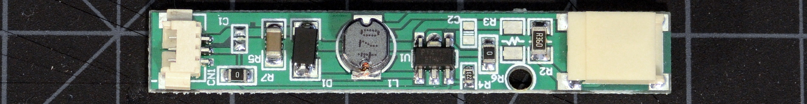

The "Cheapybuck" Kit for Thinkpads
for the X60, X60s, X60t, X61t, X61s, and X61t in particular
| cheapybuck | notes | dim range | ~cost |
|---|---|---|---|
| PWM-mode mod |
buck-down, 8-12V output 3 LED segments, 9.6V nominal |
6:1 | $10-12 |
| Tiny PWM-mode mod | |||
|  | |||
|
|||
This is a simple, dimmable buck-down controller board sold by multiple vendors in 'non-dimmable' LED kits. Those I've contacted are very very insistent there's no way this driver board can dim, and I'd need to buy a different [more expensive] kit to do so.
It dims perfectly well. The PT4115 datasheet is very clear on that point, as are actual test results. Like with the other drivers, modification is needed to work with a ThinkPad. The output is compatible with 9.6V constant-current LED strips. The PWM frequency is 200Hz unless the OS changes it. If backlight flicker bothers you, definitely use one of my continuous-mode driver boards instead.

Above: Schematic of stock, unmodified "Cheapybuck" LED driver board. It doesn't get much simpler than this. There's not even an output filter capacitor!
This is the cheapest and smallest of the boards/kits, going for as little as $6+shipping, though that will come out to more after considering the parts needed for the Thinkpad-required modifications. Without any trimming it's about the same size as the Fancyboost and can be cut down by over half. Fitted with a lower profile inductor, it will squeeze into places the other kits can't. Otherwise, it doesn't really have much to recommend it.
The PT4115 is a twitchy chip with little useful fault protection, and the trace layout of the Cheapybuck is downright absurd. It's easy to kill the Cheapybuck with an innocent mistake that wouldn't bother other kits.
The Cheapybuck's ground traces are highlighted above, with the single very narrow ground trace feeding the controller IC and LEDs circled in red. Note that the decoupling capacitor for the positive rail is on the opposite side of that trace from the IC and LEDs.
Just moving the decoupling cap next to the controller IC increases the board's average output current drive by nearly 10%. This is why the 'trimmed' mods below require different current-sense resistor values.
The PT4115 controller used in the Cheapybuck offers combined enable, PWM dimming, and analog dimming functions on a single input pin like many other controllers. However, the 'off' voltage for the PT4115 is ≤.3V, a much lower threshold than other chips. A Thinkpad's DIM signal is compatible with this constraint, but the Thinkpad ENA signal's logic low value is as high as .8V. As a result, we need to buffer the enable signal.
Above: Schematic of the Cheapybuck driver board modified for
PWM-mode operation with a Thinkpad. Red marks new or altered
components and connections.
*The recommended value of the
additional current sense resistor depends on the location of
the supply rail decoupling capacitor.
These specific components, connection points, etc. aren't the only way or even best way to do this, but it's a way that works. If you see an obvious improvement, go for it. Especially feel free to mix surface mount and through-hole components as convenient.
Above: Highlighted locations for steps 1-4 of the untrimmed Cheapybuck PWM mod. Click for a larger image.
Above: Placement of the MOSFET and solder joints in step 5. If you use a 2N7000 instead of a ZVN2106A, the pinouts are the same but the printing is on the other side. Round side up!

Above: Placement of the 1MΩ resistor and zener diode in steps 6 and 7. Click for a larger image.
The basic PWM mod is complete; what was originally the board's on/off input (center pin of the input connector) is now the DIM input. The ENA input is the anode side of the zener diode.
The Cheapybuck is small enough that there's no need to aggressively cut down the board to fit onto existing inverters; simply cut off the connectors and graft into place. That said, the Cheapybuck can be cut down to approximately 19mm x 9mm x 5mm by relocating a few components. The schematic of the cut down mod is the same except we use a different optional current-sense resistor value.
Above: PCB after steps 1-7 of the trimmed-down PWM mod for a Cheapybuck driver board. Click for a larger image.
Above: PCB after step 10 of the trimmed-down PWM mod for a Cheapybuck driver board. If you use a 2N7000 instead of a ZVN2106A, the pinouts are the same but the printing is on the other side. Round side up!
Above: Trimmed Cheapybuck board with completed PWM mod. Mouse over the image to highlight and label the connection points.
At this point, the driver PCB is ready to be connected or grafted onto an existing Thinkpad backlight inverter. Or stuffed just about anywhere really.
{kind=link}
{kind=link}
{kind=link}
{kind=link}
{kind=link}
{kind=link}
{kind=link}